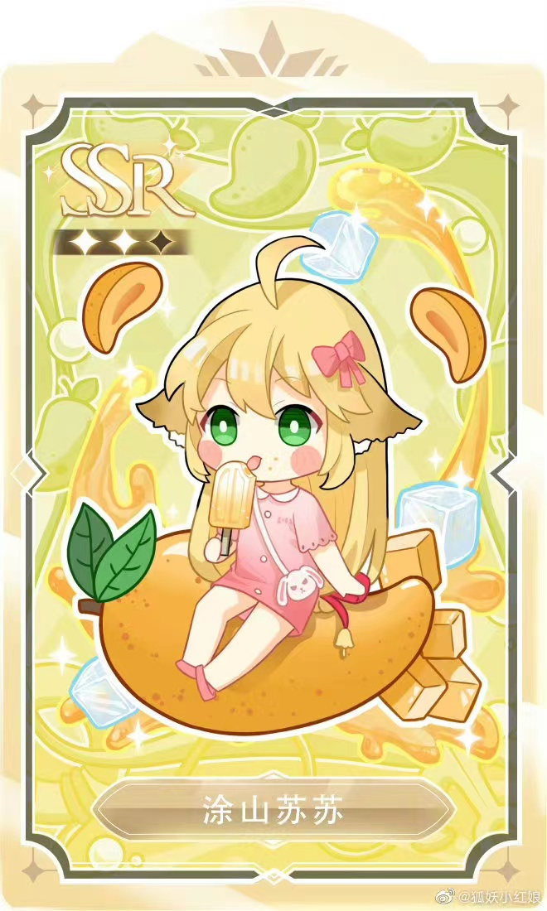

角色介绍
-

涂山苏苏
-
白月初
-
涂山红红
-
东方月初
剧情简介
《狐妖小红娘》分为《沙狐篇》、《王权篇》、《千颜篇》、《南国篇》。
沙狐篇：梵云飞向厉雪阳99次求婚都失败了，最后梵云飞和历雪扬在与蛇发火姬的斗争中身受重伤，历雪扬同意嫁给他了，二人又产生了不可磨灭的误会，后来苏苏和白月初帮助了他们，两人又重新在一起了。
王权篇：王权世家的少爷，也是东方淮竹的儿子，他的实力是王权世家最强的，王权富贵因从小就被家族作为武器培养，生活没有自由，一直过着机器般的生活，后来因为清瞳，想要给他独一无二的生活，和清瞳签订再世续缘，转世后名为王富贵。
颜篇和南国篇：分别讲了采花大盗颜如玉和西域捕快律笺文的感情，与南国公主欢都落兰和平丘月初的苦情。